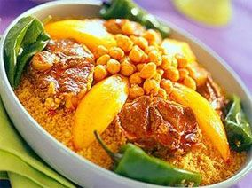
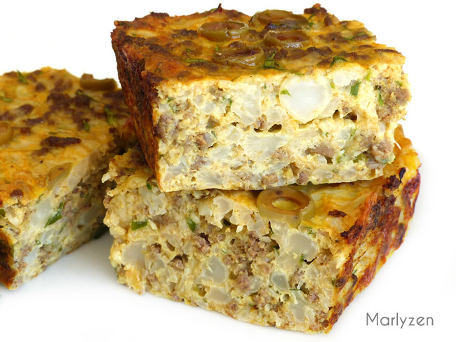
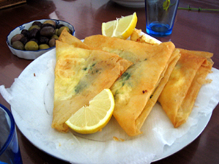

Meal Type
Appetizers
Breakfast & Brunch
Desserts
Dinner
Dish Type
Salads
Breads
Soups
Healthy Food
Salads
Breads
Soups
Search Results

Beef Couscous
Fluffy couscous is dotted with green onions, beef meat, red pepper, chickpeas and tomato sauce
Preparation time: 30 mins | Cooking time: 1 hour 30 mins

Tajine djej
This tajine is really filled with protein, and good carbs which makes you feel full and energetic for your entire day.
Preparation time: 50 mins | Cooking time: 30 mins

Tunisian Brik
A salty pastry formed in a triangle, filled with an egg, Tuna, parsley and some mashed potatoes.
Preparation time: 20 mins | Cooking time: 10 mins